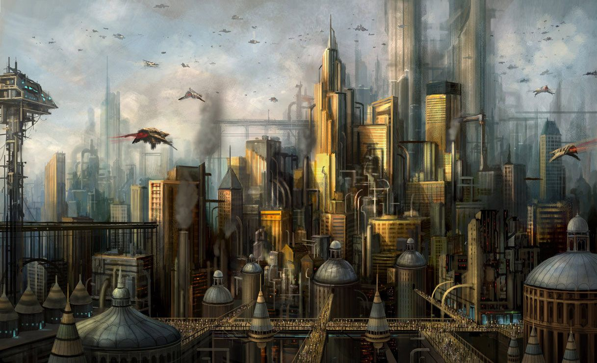

TERRA
"Beautiful on the surface, but rotten underneath. Don't ever, even for a second, doubt that this is the most dangerous world in the galaxy.... Danger does not always come in the shape of Orks with bolters, Ragnar. This world is where the elite of the Imperium have gathered. We are talking now of the most ruthless, ambitious, unscrupulous collection of rogues ever culled from a million planets. This is the place they have come to realise their ambitions, and on Terra they can, and will not let anything stand in their way. Not me, not you, not their own kin if need be."
— Torin the Wayfarer, Wolfblade to House Belisarius of the Navis Nobilite, speaking to Ragnar Blackmane

Terra, or, in the most ancient records, "Earth," is the Throneworld of the Imperium of Man and the original homeworld of Mankind and of the God-Emperor. It is the most sacred and revered place in all the million worlds that comprise the Imperium. Billions of human pilgrims from across the galaxy flock to Terra -- even the barren and contaminated soil that these pious folk now tread upon when they reach humanity's homeworld is considered sacred by the faithful of the Imperial Creed.

The Imperium's rule, carried on in the Emperor's name since the end of the Horus Heresy by the High Lords of Terra and a multitude of Imperial organisations, has been long, oppressive and necessarily harsh. It has also resulted in technological and cultural stagnation, and a regression into tyranny, superstition and religious obfuscation and intolerance that would have horrified the Emperor. Though He is no longer responsive to external stimuli, the Emperor still lies at the very heart of the Imperium's continued existence. Although He cannot be directly involved in the day-to-day running of humanity's galactic government.

Terra is effectively a globe-straddling temple dedicated to the worship of the Emperor of Mankind. The planet is home to the primary headquarters of many important Adepta of the Imperium since it serves as the capital world of the Emperor's realm. There is a great fear of Space Marines amongst the people who dwell there, due to events dating back to the Horus Heresy, when much of the planet was levelled and terrorised by the actions of the Traitor Legions.
Today Terra is the slow-beating heart of the Imperium, a sacred world of power and majesty that has become legend for most of the people of the galaxy. It is the site of the Golden Throne; the demesne of the divine Emperor of Mankind. The breathtaking architecture of its soaring buildings strike awe into the hearts of the millions of supplicants below. Forbidding statues of angels and Primarchs loom down from their eyries, their sightless stare driving out all thoughts of heresy. It is considered such a blessing to set foot upon Holy Terra that most of the pilgrims who manage to reach its polluted surface never leave.Terra is perhaps the most massive Hive World within the Imperium, with an uncounted population that numbers several hundred billion human beings. The bulk of Terra's massive population is divided between the upper class that includes the Imperial nobility and Adepts of the Adeptus Terra and the masses of the lower classes who serve as basic labourers. The upper class is comprised of the official servants of the Emperor and His Imperium, including Imperial officials, Ecclesiarchy clergy, the aristocratic families of the Navis Nobilite, military officers, scribes, and bureaucrats.
